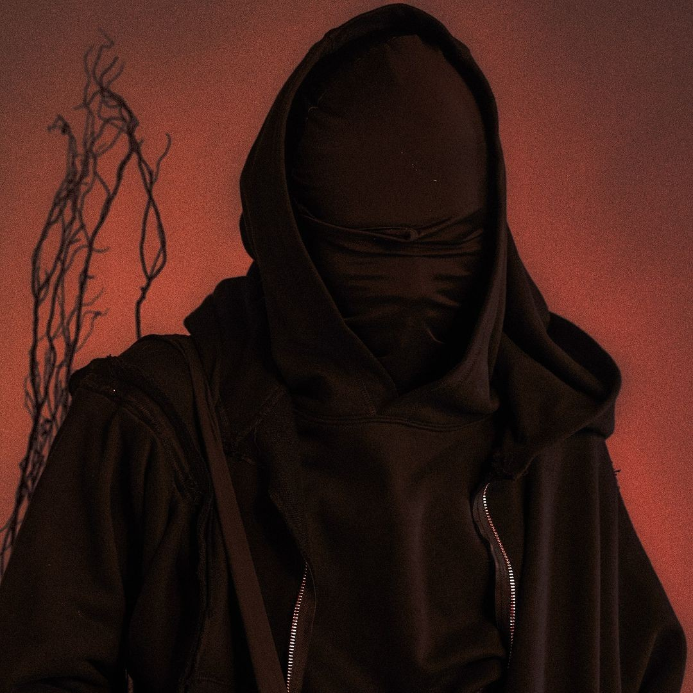
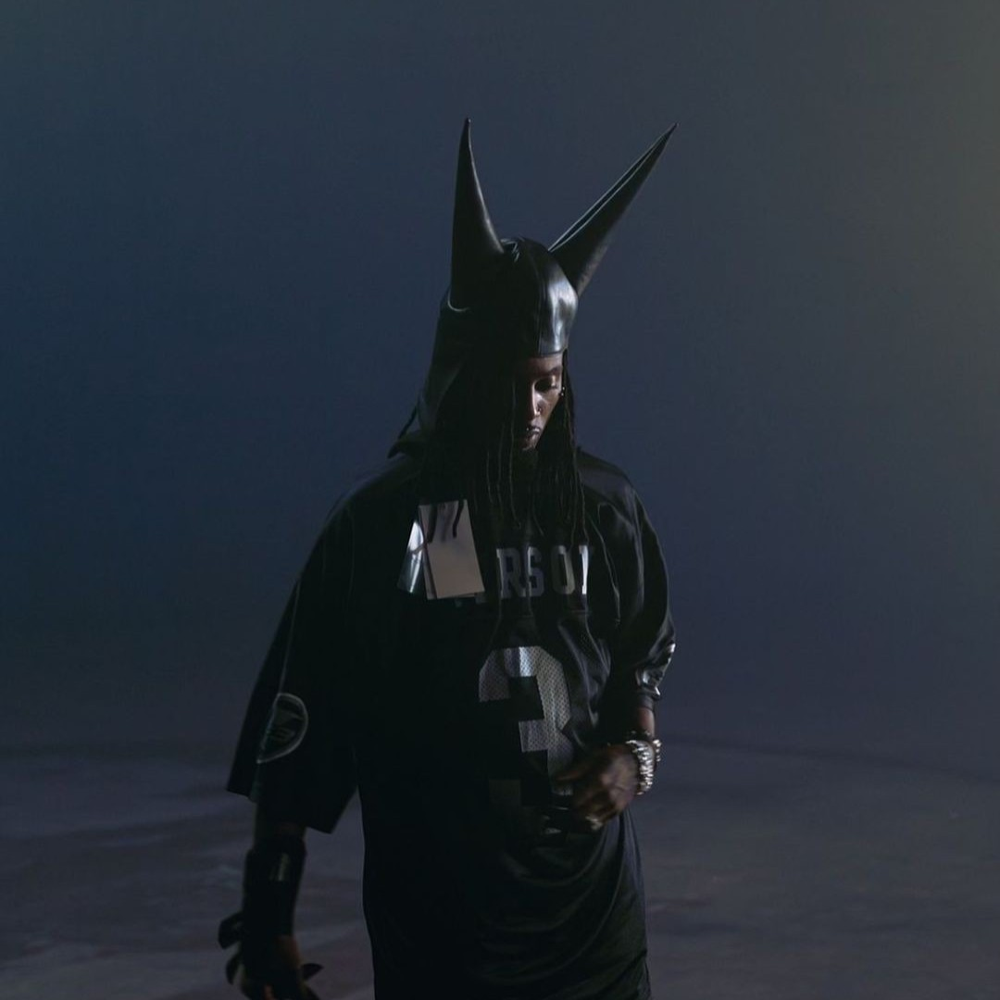
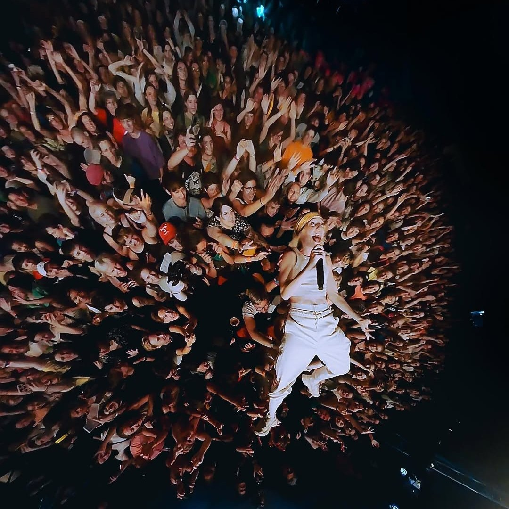

“No Man’s Land es puro descontrol, y me encanta. La gente no vino a mirar, vino a romperla con vos. Ahí no hay show, hay guerra. Y yo siempre vengo preparado.”
YAKO LUV

“La gente te devuelve cada palabra con el pecho. Ahí te sentís vivo de verdad. Yo salí del escenario con el corazón en la mano.”
LOLA
“Cloud 9 fue una locura. Todo brillaba, la música te pegaba en el pecho y la gente iba re lookeada. Estar ahí fue como decir: ok, esto no lo vivo en otro lado.”
JOAQUIN

“No Man’s Land fue un quilombo hermoso. Gente volando, pogo desde el primer tema, tierra en el aire, gritos por todos lados. Fue lo mas real que vivi en un festival.”